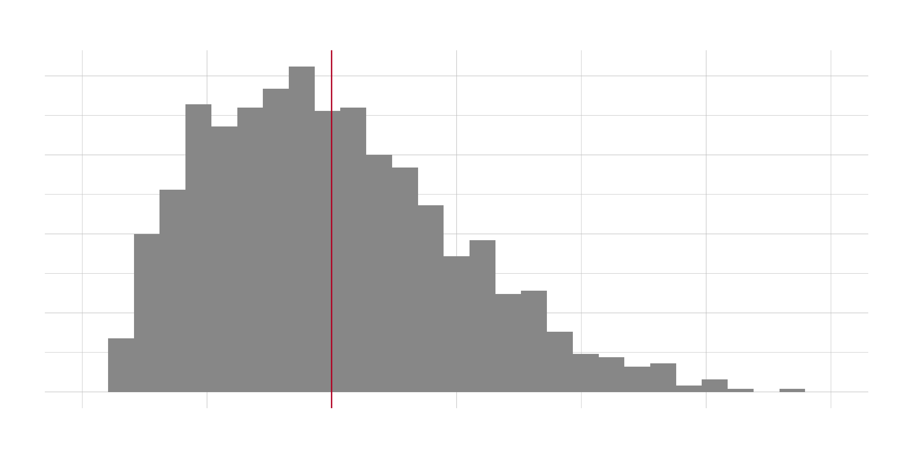
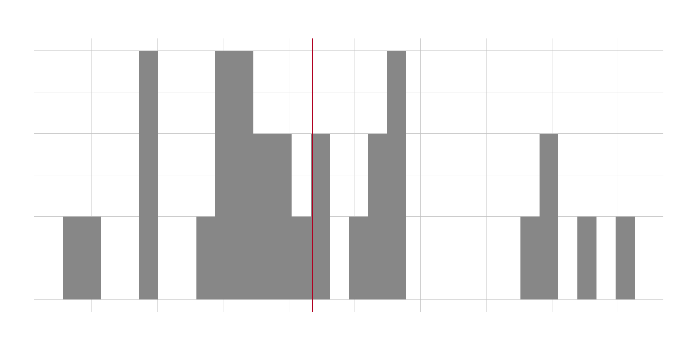
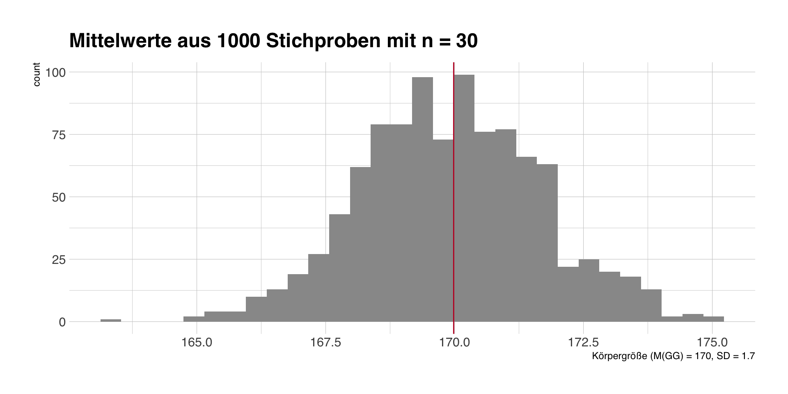
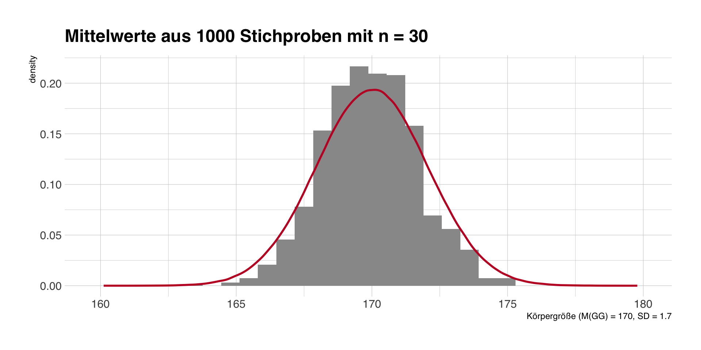
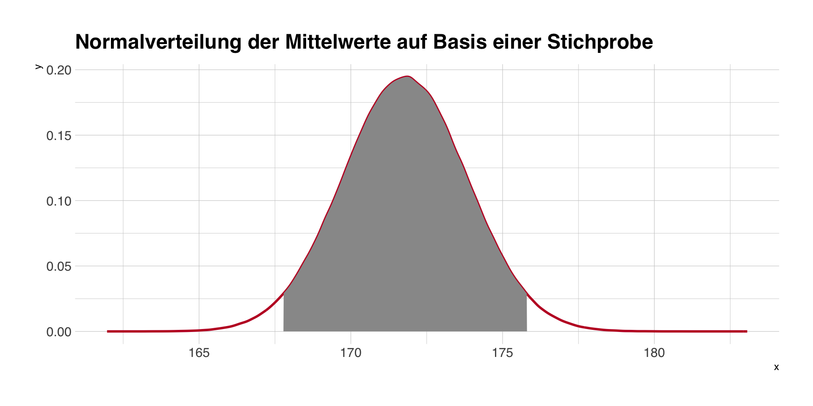
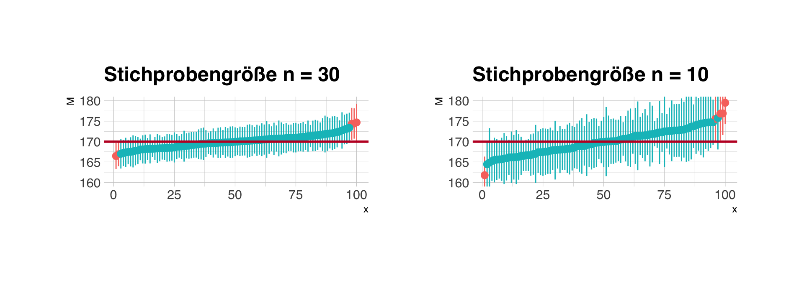
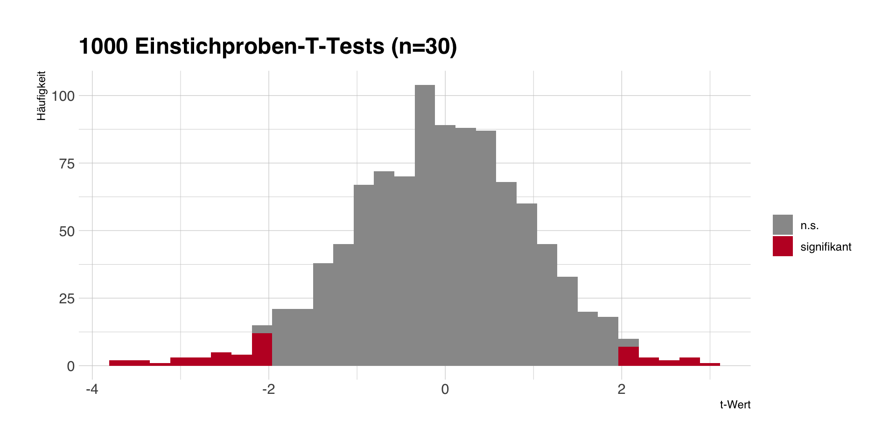
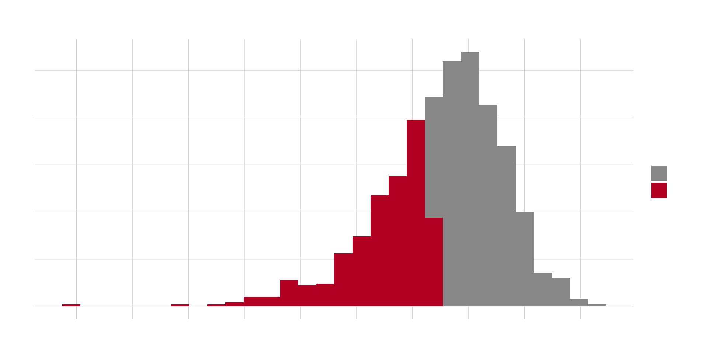
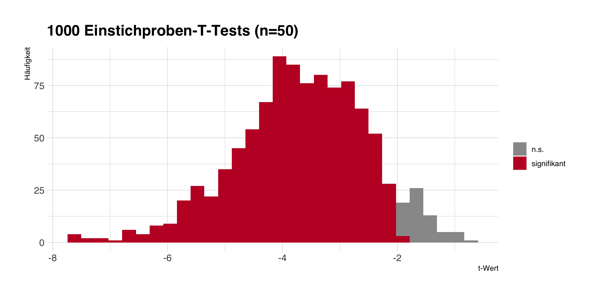

library(tidyverse)
read_csv('https://wegweisr.haim.it/Daten/breaking_bad_deaths.csv') |>
count(method, sort = TRUE) |>
head(n = 5)Anwendungsorientierte Analyseverfahren
Prof. Dr. Michael Scharkow
Sommersemester 2025
Sitzung 1
Warum (noch) eine Vorlesung zur Statistik?
- Literacy: Wenn man aktuelle Forschung lesen möchte (oder muss), führt kein Weg an etwas komplexeren Analysen vorbei.
- Selbstwirksamkeit: Wer einmal eine Analyse durchgeführt hat, kann in Seminar- und Abschlussarbeiten besser Daten auswerten.
- Jobaussichten: Viele AbsolventInnen berichten rückblickend, dass gerade die Methodenskills am besten verwertbar waren bei der Jobsuche und im Beruf.
Ziele der Vorlesung
- Studierende werden dazu befähigt, die Anwendung ausgewählter Analyseverfahren nachzuvollziehen sowie entsprechende Forschungsergebnisse und Interpretationen zu verstehen.
- Studierende sind in der Lage, für ausgewählte Analyseverfahren anhand vorgegebener Daten Ergebnisse aus der Forschungsliteratur mittels Statistiksoftware zu reproduzieren.
- Studierende verfügen über die die Kompetenz, Angemessenheit und Güte von methodischen Vorgehensweisen zu beurteilen.
- (Studierende finden Statistik weniger schlimm und langweilig).
Was die Vorlesung (nicht) ist
- keine Wiederholung der VL Statistik oder der Datenanalyse-Übungen
- Fokus auf das Verständnis für und die Anwendung von statistischen Verfahren, weniger die Mathematik dahinter
- das Allgemeine Lineare Modell (GLM) als grundlegendes Verfahren
- kein reines Ablesen von p-Werten und Signifikanz-Sternchen
- emanzipierter Umgang mit statistischen Verfahren statt Rezepte abarbeiten
Vorlesungsplan
| Sitzung | Datum | Thema |
|---|---|---|
| 1 | 23.04.2025 | Einführung |
| 2 | 30.04.2025 | GLM Grundlagen |
| 3 | 07.05.2025 | Lineare Regression |
| 4 | 21.05.2025 | Mittelwertvergleiche |
| 5 | 28.05.2025 | Multiple Regression |
| 6 | 04.06.2025 | Modellannahmen |
| Sitzung | Datum | Thema |
|---|---|---|
| 7 | 11.06.2025 | Modellvorhersagen |
| 8 | 18.06.2025 | Moderationsanalyse I |
| 9 | 25.06.2025 | Moderationsanalyse II |
| 10 | 02.07.2025 | Logistische Regression |
| 11 | 09.07.2025 | Multilevel-Regression |
| 12 | 16.07.2025 | Abschluss |
Ablauf der Sitzungen und Anwesenheit
Ablauf
- Besprechung der praktischen Übungen/Hausaufgabe (max. 15 min)
- Vorlesungsteil (max. 60 min)
- Fragen und Antworten zur Vorlesung und praktischen Übung
Anwesenheit
- keine Anwesenheitspflicht, aber auch keine Nachhilfepflicht meinerseits
- eigenständige Nachbereitung der praktischen Übungen
E-Learning und Studienleistung
Material
- Folien und Übungsmaterialien samt Daten und R-Code auf
https://stats.ifp.uni-mainz.de/ba-aa-vl
Studienleistung
- während der Vorlesungszeit 3 Teil-Studienleistungen (je ca. 15 min)
- sowohl Interpretations- als auch praktische Analyseaufgaben
- Deadline jeweils 2 Wochen nach Aufgabenstellung, Mi 12h
- Benotung jeweils Pass/Fail, 3x Pass nötig (ggf. Zusatzaufgabe)
Praktische Übungen
- zu jeder Sitzung eine praktische Übung auf Basis einer publizierten Studie
- kurze Besprechung in der Vorlesung, meist mit einer exemplarischen Analyse
- R-Code zum Replizieren der Analysen zuhause oder während der Vorlesung
- praktische Anwendung als integraler Teil der Vorlesung und der Studienleistung
- Copy & Paste/Anpassung von bestehendem Code ist ok!
Software
- in der VL vorgestellten Analysen lassen sich mit praktisch jeder Statistiksoftware reproduzieren
- jede Statistiksoftware ist nur ein Werkzeug
- Lektürekompetenz heißt auch, man kann sowohl SPSS als auch Stata oder R-Output lesen
- wegen Verfügbarkeit und Zukunftsfähigkeit verwende ich R
Für die Studienleistung ist irrelevant, welche Software Sie verwenden!
Warum muss ich jetzt auch noch R lernen?
- Sie müssen nicht!
- R ist freie Software und durch viele tausend Pakete (packages) erweiterbar, u.a. für
- Datenerhebung: Web-Scraping, APIs (z.B. für TikTok oder Spotify), Textdaten
- Auswertung: Statistik, Textanalyse, Audiodaten, Psychophysiologie, etc.
- Datenpräsentation und -visualisierung: Grafiken, Berichte, Folien (z.B. diese)
- grundlegende Programmierkenntnisse, die auch ohne Statistik nützlich sein können
- das IfP hat auf R umgestellt, siehe Kurz-Websites https://stats.ifp.uni-mainz.de/
Kleines R-Beispiel: Breaking Bad Deaths
Was macht dieser Code?
Kleines R-Beispiel: Breaking Bad Deaths
Was macht dieser Code?
Literaturempfehlungen
Field, A., Miles, J., & Field, Z. (2012). Discovering statistics using R. London: Sage.
Miles, J., & Shevlin, M. (2001). Applying regression and correlation: A guide for students and researchers. London: Sage.
Darlington, R. B., & Hayes, A. F. (2016). Regression analysis and linear models: Concepts, applications, and implementation. Guilford Publications.
McElreath, R. (2020). Statistical rethinking: A Bayesian course with examples in R and Stan. CRC press. (für Interessierte)
Refresher Inferenzstatistik
Self-Assessment
Interpretieren Sie die folgenden Analysen:
- Sie vergleichen mit einem T-Test die Körpergröße zwischen Männern und Frauen. Der berechnete T-Wert: t(100) = 3.45
- Sie vergleichen die Hausarbeitsnoten über alle 6 Parallelkurse Inhaltsanalyse mittels Varianzanalyse: p = .074
- Sie berechnen die Korrelation zwischen Anwesenheit und Punkten in der Klausur: r = .41 95%-CI (.24;.58)
Was ist Inferenzstatistik?
“Die Inferenzstatistik (d.h. schließende Statistik) beschäftigt sich mit der Frage, wie man aufgrund von Stichprobendaten auf Sachverhalte in einer zugrundeliegenden Population schließen kann.” (Eid et al., 2010, p. 191)
- Uns interessieren Verfahren für die statistische Punkt- und Intervallschätzung.
- Die Verfahren basieren auf bestimmten Annahmen über die Stichprobe und Variable(n).
- Klassische (asymptotische) Inferenzstatistik basiert auf ausreichend großen Zufallsstichproben.
- Alternative Ansätze, wie z.B. Bootstrapping, kommen mit weniger strengen Annahmen aus, sind dafür aber weniger mathematisch abgesichert und elegant.
Ein simuliertes Beispiel
Simulation
- Wir simulieren die Körpergröße in der Grundgesamtheit von N = 1200 Studentinnen und Studenten am IfP.
- Dadurch können wir prüfen, wie gut unsere Schätzung der Körpergröße durch eine einzelne Stichprobe gelingt.
Grundgesamtheit

- Grundgesamtheit: M = 170, SD = 10
Stichprobenziehung und -kennwerte
Eine einzelne Stichprobe
- Wir ziehen eine Zufallsstichprobe von n = 30 Studierenden und erheben deren Körpergröße.
- In dieser Stichprobe beträgt die mittlere Körpergröße M = 172 (SD = 11).
Stichprobenkennwerte

Wiederholte Stichproben
- Asymptotische Inferenz basiert auf der Annahme, dass die Mittelwerte vieler Stichproben derselben Grundgesamtheit normalverteilt sind.
- wir ziehen 1000 Stichproben mit jeweils n = 30
- Blau: Mittelwert in der Grundgesamtheit, Rot: Mittelwert in der einzelnen Stichprobe

Stichprobenmittelwerte und SE
Die Mittelwerte der einzelnen Stichproben streuen um den wahren Populationsmittelwert von 170 = Standardfehler (SE).
SE = \(SD(x)/\sqrt(n-1)\), den wir anhand einer Stichprobe berechnen können, als Schätzer für die Streuung der Stichprobenmittelwerte.
SE auf Basis unserer ersten Stichprobe: SE = \(11/\sqrt(29)\) = 2.

- Bei unseren 1000 simulierten Stichproben ist der Mittelwert der Mittelwerte M = 169.9.
- Die Standardabweichung der Mittelwerte ist SE = 1.7.
Stichprobentheorie und -empirie
- Stichprobentheorie sagt uns wie bestimmte Kennwerte (z.B. Mittelwerte) in unendlich wiederholten Stichproben verteilt sind.
- Diese Information können wir mit den Schätzern aus einer Stichprobe kombinieren.
- Darauf basieren die Intervallschätzung und Hypothesentests.

Rot: Normalverteilungskurve mit Mittelwert und Standardfehler aus der ersten Stichprobe.
Konfidenzintervalle
- basieren auf der Annahme, dass ein Schätzer einer bestimmten Verteilung folgt.
- Bei einer Standardnormalverteilung (M = 0, SD = 1) liegen 95% aller Werte zwischen -1,96 und 1,96.
- Wenn wir M und SE einsetzen, bekommen wir ein 95%-CI für den Mittelwert, d.h. M - 1.96xSE und M + 1.96xSE.

95%-Konfidenzintervall auf Basis unserer ersten Stichprobe (M und SE): 167.8 - 175.8
Interpretation eines Konfidenzintervalls
- Ein 95%-Konfidenzintervall bedeutet: in 95 Prozent aller denkbaren Stichproben würde das Konfidenzintervall den wahren Populationswert enthalten.
- Die Wahrscheinlichkeit, den wahren Wert zu enthalten, bezieht sich auf die Konstruktion von Konfidenzintervallen, nicht auf ein einzelnes Intervall.
- Wir wissen aber bei einer einzigen, konkreten Stichprobe nicht, ob unser Konfidenzintervall den wahren Wert enthält.
- Aber wir sind zuversichtlich (“confident”), dass unsere Stichprobe zu den 95% “Treffern” gehört, nicht zu den 5% Abweichlern.
- Wenn der Wert unter der Nullhypothese nicht im Konfidenzintervall liegt, bezeichnen wir das Ergebnis als statistisch signifikant.
Abdeckung der Konfidenzintervalle
Je größer die Stichprobe (n), desto kleiner der Standardfehler (SE), d.h. desto enger das Konfidenzintervall. Es gilt aber immer, bei 95%-CI enthalten langfristig 5 von 100 Intervallen nicht den Populationswert.
Die Welt der Nullhypothese?
- Im Gegensatz zu den unendlich vielen Alternativhypothesen, die man haben kann, gibt es immer nur eine Nullhypothese.
- Es besteht kein Unterschied/Abhängigekeit zwischen Gruppen oder Variablen.
- Von fast allen Verfahren (T-Test, Korrelation, Chi-Quadrat-Test, etc.) wissen wir, wie die “Welt der Nullhypothese aussieht.
- Wir prüfen Stichprobenkennwerte daraufhin, wie häufig oder wahrscheinlich sie in der Welt der Nullhypothese sind.
- Diese Wahrscheinlichkeit ist der p-Wert.
Was bedeutet der p-Wert?
p(Daten|H0)
- Der p-Wert ist die bedingte Wahrscheinlichkeit, die empirischen Daten (z.B. eine Mittelwertdifferenz zwischen zwei Gruppen) zu beobachten, wenn die Nullhypothese in der Grundgesamtheit gilt.
- Beispiel bei einem t-Test für eine Mittelwertdifferenz erhalten wir einen p-Wert von p = .08. Das bedeutet, wir würden in 8 von 100 Fällen eine mindestens gleich große Differenz beobachten, auch wenn in der Grundgesamtheit gar kein Unterschied ist.
Was bedeutet der p-Wert nicht?
p(Daten|H1): Die Wahrscheinlichkeit, die empirischen Daten zu beoachten, wenn die Alternativhypothese gilt.
p(H0|Daten): Die Wahrscheinlichkeit für die Richtigkeit der Nullhypothese im Lichte der Daten.
p(H1|Daten): Die Wahrscheinlichkeit für die Richtigkeit der Alternativhypothese im Licht der Daten.
Der p-Wert sagt also nichts über die Wahrscheinlichkeit der Null- oder Alternativhypothese!
außerdem:
- Das Ablehnen der Nullhypothese sagt nichts über die Alternativhypothese!
- Die meisten von uns interessieren sich nicht für die Frage, die der p-Wert beantwortet!
Was bedeutet dann statistische Signifikanz?
- Wir nennen ein Ergebnis statistisch signifikant, wenn \(p < \alpha\), wobei \(\alpha\) das zuvor angenommene Signifikanzniveau ist.
- Zwei mögliche Ursachen:
- Die Nullhypothese gilt, aber wir beobachten zufällig ein sehr seltenes Ereignis oder
- Die Nullhypothese gilt nicht. (Das heißt nicht, die Alternativhypothese gilt.)
- Wenn \(p < .05\), sind wir zuversichtlich, dass unsere Stichprobe nicht zu den 5% Abweichlern in der Welt der Nullhypothese gehört, sondern einfach die Nullhypothese nicht stimmt.
Fehler in der Inferenz
Alpha- und Beta-Fehler

Quelle: https://www.statisticssolutions.com
Alpha-Fehler
- Ein \(\alpha = .05\) bedeutet, dass wir in 5 von 100 Fällen ein signifikantes Ergebnis bekommen, obwohl die Nullhypothese gilt.
- Mit unseren 1000 Stichproben und \(\mu_0 = 170\) sollten wir beim T-Test grob 50 fälschlich signifikante Ergebnisse bekommen.
- Fehler ist abhängig von \(\alpha\), aber unabhängig von den Daten und der konkreten \(H_0\).

- Problem: Wir wissen (wie immer!) nicht, ob unsere Stichprobe zu den grauen oder roten Stichproben gehört.
Beta-Fehler und statistische Power
- Um Beta-Fehler (H0 wird fälschlich angenommen) zu verringern, brauchen wir statistische Power bzw. Präzision (vgl. Konfidenzintervalle).
- Um die Power/Präzision eines Tests/einer Schätzung zu erhöhen, muss man zumeist die Stichprobengröße erhöhen.
- Per Umstellung der SE-Formel kann man die nötige Stichprobengröße für erwartete Schätzer berechnen.


Take home message
Inferenzstatistik ‚funktioniert’, weil…
- wir die Form der Verteilung von Kennwerten bei wiederholter Durchführung von Zufallsstichproben kennen (zentrales Grenzwerttheorem) und
- wir die Parameter der Verteilung aus den Daten unserer Stichprobe schätzen können.
- Aber: wir kennen nur die Welt der Nullhypothese (egal für welchen Test und welchen Schätzer), d.h. alle Aussagen der NHST beziehen sich auf diese Welt.
- Die Präzision unserer Schätzung bzw. Power unseres Tests hängt ab von der Streuung des Merkmals und der Größe der Stichprobe (je größer, desto präziser). Entsprechend sollten Untersuchungen geplant werden.
- Es gibt immer Alpha- und Beta-Fehler, und für eine Stichprobe können wir nie exakt wissen, wo wir stehen.
Hauptsache signifikant?
- Hypothesentests als stumpfe Rituale mit dem Ziel, p < .05 zu erhalten.
- von Konvention zum reinen Selbstzweck (Signifikanz = gut, keine = schlecht).
- Das sog. p-Hacking bedeutet, die Daten und Analysen so zu frisieren, bis ein stat. signifikantes Ergebnis erscheint.
- Signifikanz sagt nichts über substanzielle Bedeutung!
- Bitte in Zukunft beachten:
- Nicht p-hacken, nicht im Nachhinein am Alpha-Niveau schrauben!
- Kein Bedauern nicht-signifikanter Ergebnisse (“leider knapp nicht signifikant”)!
Fragen?
Aufgaben zur nächsten Sitzung
- Lesen Sie die Einführung in R aus dem BA-Datenanalyse Kurs https://stats.ifp.uni-mainz.de/ba-datenanalyse/r-und-rstudio.html
- Lösen Sie dort die Hausaufgaben 1 und 2 (Installieren von R).
Achtung: Bei Aufgabe 2 bitte die Materialien dieser VL https://stats.ifp.uni-mainz.de/ba-aa-vl/ statt der BA-Datenanalyse herunterladen und öffnen. - Fallback-Option: RStudio im Browser https://rstudio.ifp.uni-mainz.de, dort das Projekt im Ordner
ba-aa-vlöffnen.
(nur aus dem JGU-Netzwerk, Username = Passwort = ZDV-Nutzername) - Frischen Sie ggf. ihre Statistik-Kenntnisse auf. Alle sollten wissen, was eine (Ko)-Varianz ist oder wie eine Datenmatrix aussieht.